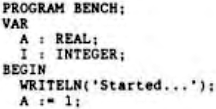

Scorpio News |
April–June 1987 – Volume 1. Issue 2. |
| Page 16 of 51 |
|---|
When I treated my system to its Gemini GM832 SVC (video) board, I found that is was possible for it to operate a keyboard, taking some of the load off the main processor. This would let me make things go faster, which is becoming an obsessive pursuit. But the SVC wanted to speak to either a serial or parallel keyboard from the Gemini range, and I happen to have a Nascom II keyboard.
It would have cost quite a lot to buy either of the Gemini keyboards, I think they are around the £140+VAT mark, so that idea was out. But the dealer who sold me the SVC (no names as I feel they should pay for their advertising) happened to mention that a member of a Thames Valley Nascom user group had made up some boards that would fit in between the Nascom II keyboard and the SVC. He said that these boards had a cpu of their own, which just scanned the keys and passed on what it found.
As well as the advantage of things running faster, this would also let me take advantage of the keyboard type-ahead that the SVC allows. So if you happen to be in possession of a spare one of the converter boards, I would be very pleased to hear from you I might even buy one if the price is sensible. Incidentally, I have heard that perhaps this user group has been photocopying magazines. This practice is of course illegal, but copying my stuff also carries a curse the like of which has not been around since the Pharaohs.
The catch in this case is that if I do take the keyboard scanning load away from the main processor, it will mean that my CP/M will need to be sorted out to recognise the new keyboard, instead of carrying out the original scanning routine. But I have been meaning to do that for ages, in order to use the new improved BIOS software that is now available (I hear it goes faster) and was described in the last Scorpio News.
No great problem, apart from finding the time, you might think. However, my CP/M has already been modified to provide a RAM disk on two MAP-80 RAM boards, and I have no idea what they have done, or where they did it. I suppose I will have to find where the old CP/M and the present one are different, and then disassemble the new bits. The result will then need to be incorporated in the improved system. Maybe MAP-80 will write an article about how their notification works. I think that would be very interesting to read, and it could also give some clues about another thing I would do, if I only knew how. It would be very handy in certain circumstances to be able to get CP/M to think the RAM disk is drive A, and vice versa. There is still some software around that insists on being on drive A, which I would like better if it went at drive P speeds! Has anyone managed to achieve this? Then tell us all how, don’t keep it to yourself!
In case you didn’t buy the first issue of Scorpio News, here is the Pascal version of a benchmark program from Dr Dobbs’ Journal (no relation) no 83, which is supposed to show you how fast and how accurate the language you are using is.
{$t+ This tells the Hisoft compiler to include the run time routines that deal with the trigonometry and exponentiation, etc. }
| Page 16 of 51 |
|---|